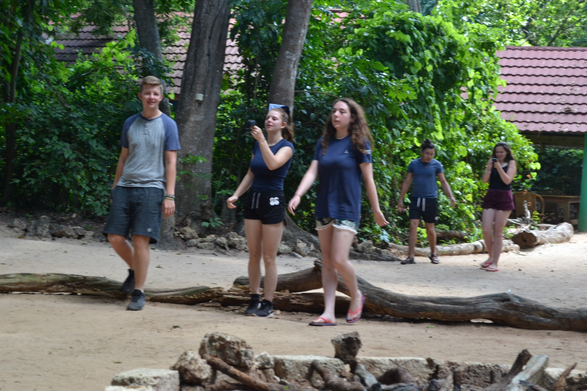
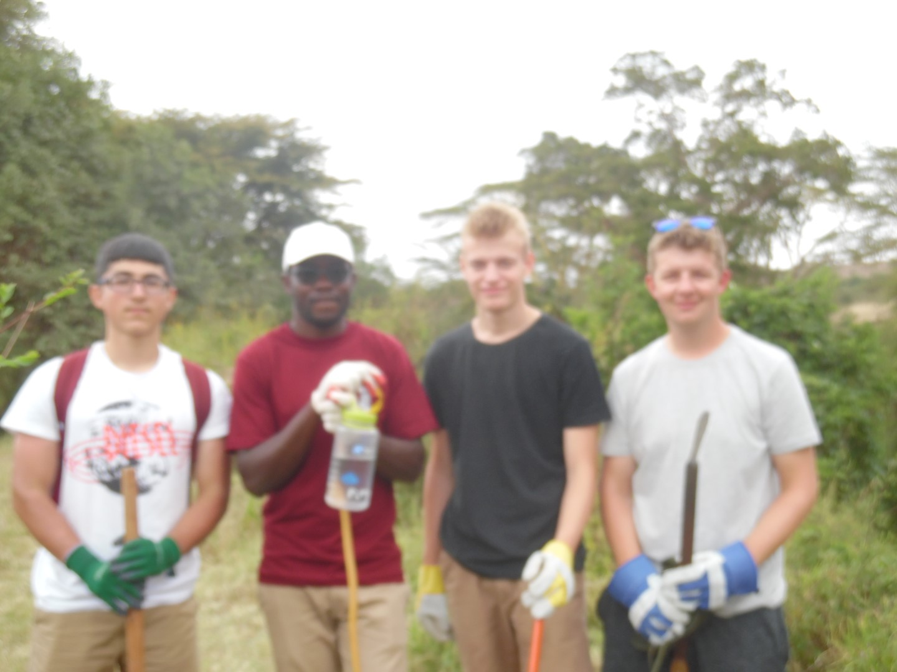
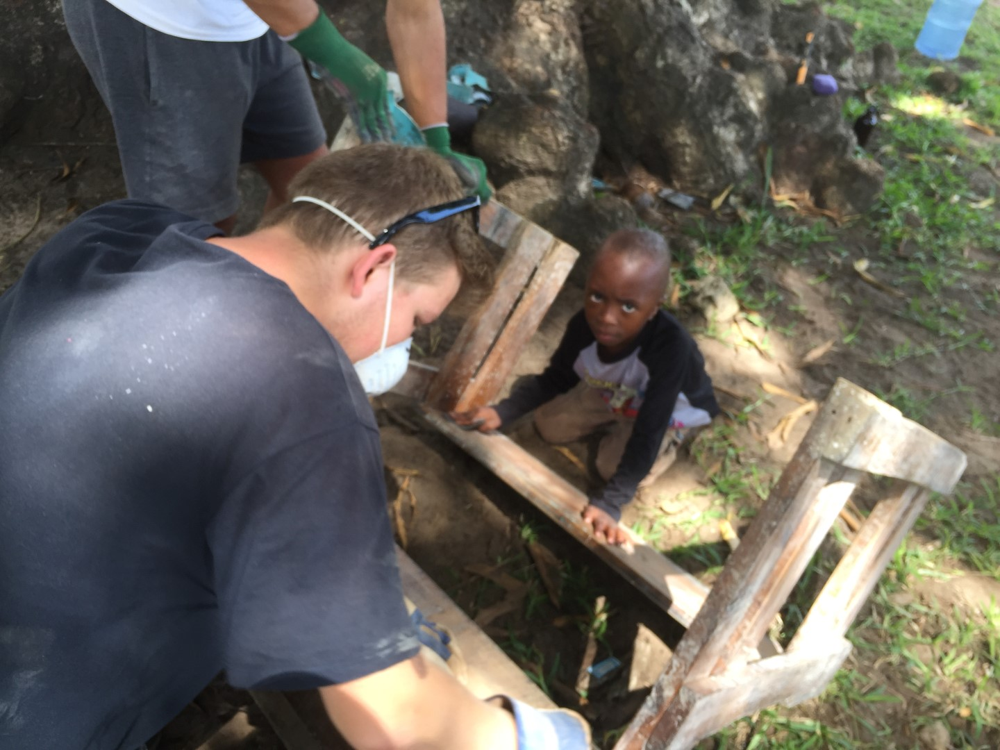
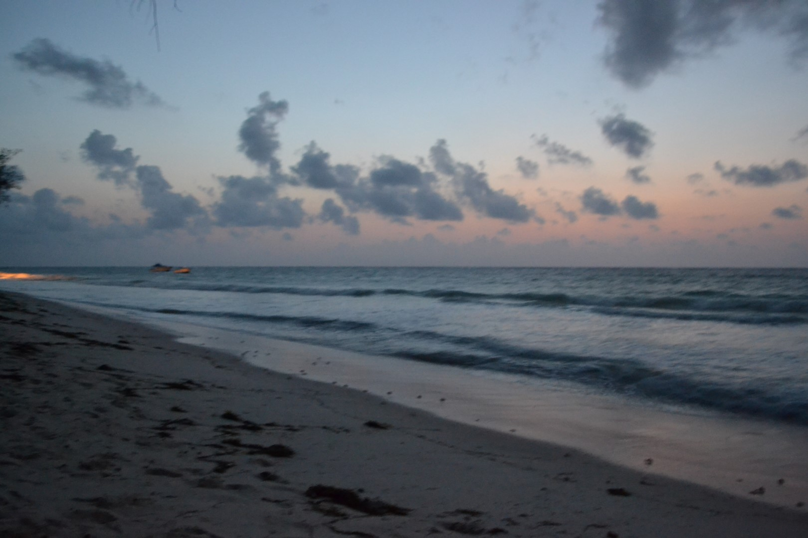
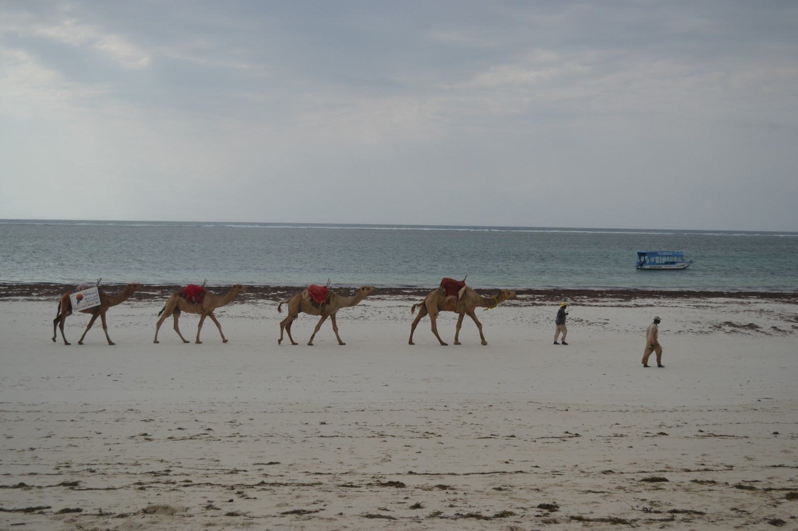
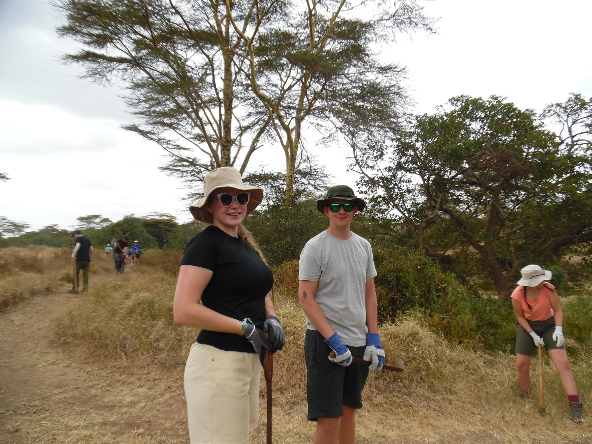
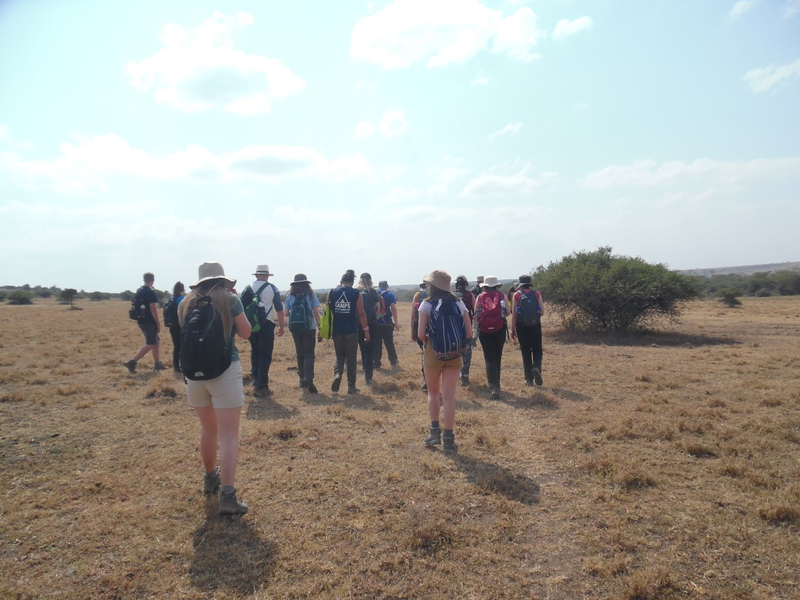
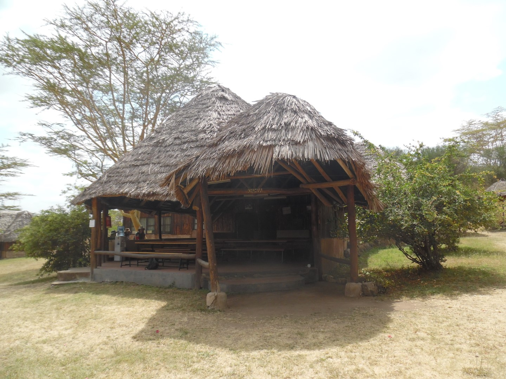
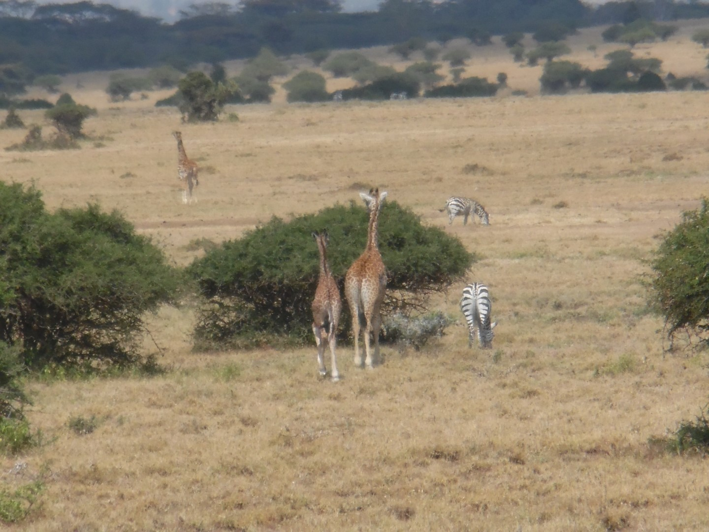
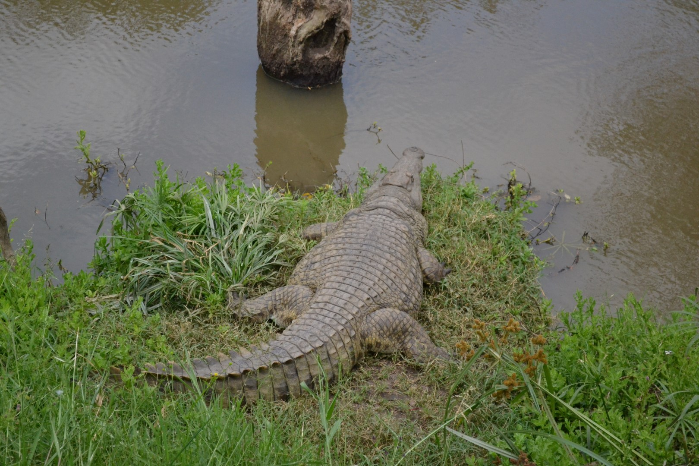

Hello, my name is Jakob Casey. I am 18 years old and am currently studying Computer Forensics and Security at Leeds Beckett University in my first academic year there.
My main goals in life are to move to Japan after finishing my university course, marry and move to America to live out the rest of my life there. It has always been my goal to have an
experience in the Eastern culture of the world as it is so different to that of England and the rest of Europe.
One of my other goals in life is to become a full time streamer on twitch.tv before I am 23. I have always enjoyed the idea of streaming to a public audience all across the world.
Eventually I want this to become a part of my lifetstyle along side the knowledge I have learned from my university course. I have been setting up my favourite games and learning off of the content that other people enjoy in order to move foward with streaming.
The best experience of my life so far has been going to Kenya for a month during the summer holiday of 2019. I raised £4000 in order to go there, persevereing through multiple fundraisers and online campaigns in order to make that money. It was a very life changing experience for me and it further sparked my interest in other cultures other than the one we experience here at home. Below I have included some photos of this journey.